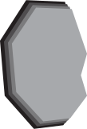

Ruim tweeduizend jaar geleden is Heerlen nog geen stad van staal of steenkool, maar een strategisch baken in een ongetemd landschap. De Romeinen leggen hier het fundament voor Coriovallum: een vitaal knooppunt waar soldaten en handelaren over de Via Belgica trekken. Waar nu beton ligt, mengde de geur van Romeinse thermen zich toen met het stof van marcherende legioenen. Wat je vandaag ziet, is gebouwd op deze eeuwenoude lagen van beweging; een plek waar de wereld toen al samenkwam lang voordat de eerste mijnklok luidde.
De Romeinen kozen deze plek met een reden; de naam Coriovallum betekent letterlijk 'perfect gelegen versterking'. Hier kruisten twee van de belangrijkste wegen uit het Romeinse Rijk elkaar, waardoor de plek een bruisend knooppunt werd. Soldaten, handelaren en reizigers waren hier aan de orde van de dag. Voor het eerst kwamen er stenen gebouwen en een strakke organisatie in dit gebied. Het was het begin van de moderne structuur zoals we die nu kennen. Maar diep onder het zand lag nóg iets bijzonders verborgen...
In het midden van de Tweede Wereldoorlog stuitte Heerlen plotseling op een vergeten wereld. Bij graafwerkzaamheden in het centrum kwam een compleet Romeins badhuis tevoorschijn, dat eeuwenlang verborgen lag onder het zand. Dit was vroeger dé plek om te zien en gezien te worden; na het werk kwamen de inwoners hier samen om te wassen, te roddelen en belangrijke deals te sluiten. Tegenwoordig kun je deze oude 'wellness' nog steeds met eigen ogen bekijken in het Thermenmuseum. Maar na het vertrek van de Romeinen veranderde alles: het ritme, het leven en zelfs het hele landschap...
Na het vertrek van de Romeinen valt de stadse drukte weg en krijgt de natuur weer de overhand. Vanaf de tiende eeuw verandert Heerlen langzaam in een rustig boerendorp waar de klok wordt gelijkgezet met de seizoenen. Langs de kabbelende beken verschijnen de eerste watermolens en grote boerenhoeven die het landschap domineren. Het leven is nu lokaal en kleinschalig; elke dag draait om hard werken op het land en simpelweg overleven. De rust in het dal lijkt eeuwig, tot rond 1900 de eerste voortekenen van een enorme verandering de aarde doen trillen…
Tussen de grazende koeien en de stilte van de velden wordt een ontdekking gedaan die alles op zijn kop zet: er zit steenkool in de grond. Eerst blijft het nog even rustig, maar de industrie ziet de kansen van dit 'zwarte goud' dat diep onder de Limburgse bodem wacht. De eerste proefboringen zijn gedaan en de klok begint onvermijdelijk te tikken. De plannen liggen klaar en de wereld kijkt mee. Dan, een paar decennia later, volgt de grote explosie die het kleine boerendorp voorgoed zal veranderen in een industriële wereldstad...
"Kolen!"
Het woord dat alles zou veranderen
Aan de start van de twintigste eeuw is Heerlen nog steeds dat bescheiden dorp, maar in de straten hangt een nieuwe energie. De eerste contouren van een echte centrumstad worden zichtbaar: een dokter, een veearts en zelfs een eigen kantongerecht trekken mensen naar de kern. Er verschijnen winkels en de markt wordt het kloppende hart van de streek. Het voelt allemaal nog dorps en vertrouwd, maar de schijn bedriegt. Onder de voeten van de voorbijgangers ligt de toekomst in de vorm van zwarte kolen al klaar. Wanneer de mijnbouw losbarst, zal geen enkele steen in Heerlen meer hetzelfde blijven...
Sarolea ziet wat anderen niet zien. Hij brengt de spoorweg naar Heerlen. Zonder trein geen kolenvervoer. Dit is het moment dat het agrarische hart voor het eerst een industrieel ritme krijgt. In ditzelfde jaar kregen de Duitse broers Honigmann de officiële licentie om te graven. Zij wisten namelijk dat er onder Heerlen een fortuin aan steenkool lag. Om de kritische bazen in Den Haag te paaien, noemden ze hun bedrijf slim de 'Oranje-Nassau' mijnen. Met deze koninklijke marketingtruc kregen ze hun zin en veranderde Heerlen van een boerendorp in een industriegebied.
Vijf jaar later, met de opening van de Oranje-Nassau I begon de eerste mijn echt te draaien en verdween de landelijke rust voorgoed. Ineens stond daar een gigantische toren die dag en nacht herrie maakte, terwijl lokale boeren nog geen idee hadden hoe ze de kolen uit de grond moesten halen. Daarom haalden de eigenaren experts uit het buitenland, waardoor de straten van Heerlen ineens vol liepen met Duitse en Sloveense "aliens".
Een aantal jaar na de opening van de eerste mijn, begon de regering zich een beetje zorgen te maken. Zij wilde namelijk niet dat buitenlanders de baas werden over onze energie en besloot daarom zelf de 'Staatsmijnen' op te richten. Ze gaven de mijnen namen zoals Wilhelmina en Emma, een geniale truc waardoor de mijnprojecten direct "heilig" werden. Niemand durfde namelijk te klagen over stank of lawaai als dat betekende dat je eigenlijk klaagde over de Koningin zelf.
| Naam | Plaats | Open | Sluit | Type |
|---|---|---|---|---|
| Oranje Nassau I | Heerlen | 1899 | 1974 | Privaat |
| Emma | Hoensbroek | 1911 | 1973 | Staats |
| Oranje Nassau III | Heerlenheide | 1917 | 1973 | Privaat |
| Oranje Nassau IV | Heksenberg | 1925 | 1966 | Privaat |
In 1917, terwijl heel Europa in brand stond door de Eerste Wereldoorlog, zat Nederland veilig aan de zijlijn, maar het land schreeuwde om energie. Omdat de import uit het buitenland stopte, schoot de prijs van de Heerlense kolen met wel 400% omhoog; het "zwarte goud" was ineens letterlijk goud waard. Het geld stroomde met miljoenen tegelijk de stad binnen, waardoor Heerlen in deze donkere jaren veranderde in de rijkste en drukste schatkist van Nederland.
Zelfs toen de rest van de wereld jaren later in een diepe economische crisis belandde, bleef Heerlen haar pasverdiende rijkdom met trots tonen aan de buitenwereld. Midden in de armoede bouwt het modehuis Schunck het glazen monument. Het laat zien: wij zijn modern, wij zijn rijk. Een jaar later start ook de bouw van het Raadhuis als statement van ongekende rijkdom en zelfvertrouwen. Architect Frits Peutz ontwierp zowel het glazen monument als de strakke, witte "tempel" die de rest van Nederland jaloers maakte.
Na de tweede wereldoorlog lag Nederland wederom in het puin en waren de mijnwerkers als "helden van de arbeid" de enige hoop om het land weer tot leven te wekken. De regering smeekte om brandstof en de koempels werkten zelfs op zondag door tijdens de legendarische "Kolenslag". Ze werden behandeld als topsporters met extra eten en stonden op posters door het hele land: de mijnwerker werkte voor iedereen.
Wil je meer ontdekken over Heerlen's mijngeschiedenis?
In 1899 was Heerlen nog een plek waar de tijd leek stil te staan. Een dromerig boerendorp van krap 6.300 zielen, waar de geur van vers gemaaid gras en mest de straten vulde en de kerktoren van de Pancratius het hoogste punt van de horizon was. Maar diep onder de grazende koeien in de wei trilde de aarde al...
Drieëntwintig jaar later is de stilte van de weiden definitief verdreven door het stampen van de machines. De mijnen zijn nu de almachtige huisbazen die de 'Molenberg' uit de grond stampen: een stad in een stad, gebouwd voor een nieuwe, industriële wereld. In de straten van deze kolonie mengt de geur van steenkool zich met een symfonie van vreemde talen. De Limburgse identiteit vloeit hier samen met die van duizenden migranten, zoals de cijfers hiernaast laten zien.
De wederopbouw draait op volle toeren en de Limburgse bodem vraagt om meer handen dan de streek kan bieden. In de 'Gezellenhuizen' klinken nieuwe ritmes; de geur van sterke espresso en olijfolie waait door de straten. Jongemannen uit Italië en Spanje dalen nu af in de zwarte schachten om de Nederlandse economie te stutten. Heerlen kleurt voor het eerst echt zuidelijk, terwijl de mijnklok onvermoeibaar de maat van de vooruitgang blijft slaan.
De mijnen bereiken hun kookpunt en de roep om versterking klinkt nu tot in Turkije en Marokko. In de wijken rondom de schachten ontstaat een unieke lappendeken van culturen; de lokale bakker verkoopt nu vaker platbrood en de markt is een kakofonie van vreemde talen. De mijn is niet langer alleen een werkplek, maar een wereldhaven in het binnenland waar duizenden gelukszoekers hun wortels diep in de zwarte aarde planten.
De cirkel sluit. De laatste lift gaat omhoog en de koeltorens vallen, maar de mensen blijven. De 'vreemdelingen' van weleer zijn nu de vaders en grootvaders van de stad geworden. Hoewel de mijnen sluiten, leeft de koempel-geest voort in een nieuw, uniek DNA: een mix van Limburgse trots en internationale veerkracht. Het boerendorp van 1899 is definitief veranderd in een stad van de wereld.
Diep onder de grond is gevaar geen tekst in een handboek, maar de lucht die je inademt. Omdat je het dodelijke, reukloze mijngas niet kunt zien of ruiken, is het felgele vogeltje in zijn kooitje je allerbelangrijkste levenslijn. Zolang de kanarie fluit of onrustig rondhopt, is de lucht veilig, maar zodra het beestje van zijn stokje valt, telt elke seconde om weg te komen voor de onzichtbare dood toeslaat. In deze duisternis betekent arbeidscultuur dat je je leven letterlijk toevertrouwt aan de man naast je; je bent geen collega's, je bent elkaars overlevingsgarantie.

Vanaf 1911 is de mijnwerker niet langer een 'ongeoefende zwoeger', maar een gediplomeerd vakman. Met de invoering van de eerste officiële houwersdiploma's ontstaat er een nieuwe adel onder de grond. De Meester-houwer klimt op tot de onbetwiste koning van de schacht. Hij is degene die de zwarte wand 'leest', die weet waar het gevaar loert en die met één blik bepaalt hoe hard er gezwoegd wordt. Heb je je diploma? Dan verdien je niet alleen meer goud in je loonzakje, maar dwing je diep respect af bij elke man die de lift in stapt.
Na jaren van uitputting en dagen die pas eindigden als de ruggen brak waren, valt in 1919 eindelijk de beslissing: de acht-urige werkdag is een feit. Voor de koempel betekent dit een revolutie; voor het eerst blijft er zonlicht over na de dienst. De mijn grijpt dit moment aan om de 'vrije tijd' van haar arbeiders vorm te geven.
In de hoogtijdagen van de kolen was de mijn niet zomaar je werkgever; het was je hele universum. De mijn regelde alles voor je: van de sportclub waar je voetbalde en de kerk waar je bad, tot de school waar je kinderen leerden lezen. Binnen deze muren heerste een ijzeren hiërarchie die je nergens anders zag. Aan de top stond de Meester-houwer als een onbetwiste koning van het kolenfront, terwijl de 'Piemel', de groenste nieuwkomer die onderaan de ladder begon, alleen mocht zwijgen en keihard werken. In deze wereld leerde je snel: pas als je het zwarte stof had bewezen, verdiende je de stem die je als koempel nodig had om te overleven.
Ondergronds werk je in een wereld waar je nooit weet of je de zon weer zult zien, en daarom is geloof hier geen keuze, maar pure noodzaak. Sint Barbara is de onbetwiste beschermheilige van de koempels; haar beeldje staat in elke schacht als een baken van hoop in de zwarte duisternis. Om de moraal hoog te houden, richtten de mijnen de 'Dienst van het Geluk' op, een afdeling die niet alleen zorgde voor de veiligheid, maar ook voor het hart van de gemeenschap.
Vanaf 1952 wordt de 'schaf' officieel hét ankerpunt van de dag. De koempels kruipen bij elkaar op houten balken of lege kisten voor hun gezamenlijke pauze. In het schijnsel van hun hoofdlampen worden de 'boterhammen met tevredenheid' uitgepakt. Maar de schaf is veel meer dan alleen eten; het is het moment waarop de pikorde wegvalt. Hier worden de scherpste grappen gemaakt, de wildste verhalen gedeeld en de diepste zorgen besproken.
Wil je meer ontdekken over Heerlen's mijngeschiedenis?
Op 17 december 1965 valt het onverbiddelijke vonnis: de mijnen gaan dicht. Met de legendarische woorden 'De tijd van de kolen is voorbij' verbreekt Joop den Uyl de belofte van eeuwige welvaart. Voor Heerlen betekent dit het einde van een identiteit die decennialang in de diepte werd gesmeed. De stad van de duizend lichten moet plotseling leren leven in de schaduw van een onbekende toekomst.
Lange tijd leek de mijnindustrie onverslaanbaar, maar in 1958 verschijnen de eerste onheilspellende scheuren. De Limburgse steenkool krijgt plotseling keiharde klappen van buitenaf. Vanuit Amerika varen enorme schepen vol met spotgoedkope kolen de Europese havens binnen en tegelijkertijd begint stookolie de kachels in de huiskamers te veroveren. De onschendbaarheid van de koempel wankelt.
Een jaar later, terwijl de koempels in het Zuiden nog vechten voor elke brok steenkool, gebeurt er in het Groningse Slochteren iets dat de wereld op zijn kop zet. Bij een proefboring stuit men op een gigantisch aardgasveld. Het is de genadeslag voor de mijnindustrie. Aardgas is alles wat steenkool niet is: het is schoon, het is spotgoedkoop en je hoeft er niet voor te zwoegen in een donkere schacht. In één klap is de eeuwenoude steenkool veranderd in een brandstof uit het verleden.
17 december 1965. De Stadsschouwburg van Heerlen zit tot de nok toe vol met mannen in nette pakken. Het zijn de mijnwerkers, de helden van de wederopbouw. Ze verwachten nieuws over de toekomst, maar dan stapt minister Joop den Uyl het podium op en kondigt aan dat de mijnen moesten sluiten omdat Gronings aardgas veel goedkoper was. Voor de mijnwerkers voelde dit als een keihard verraad; hun identiteit en toekomst werden in één toespraak van dertig minuten weggevaagd. Het was de zwartste dag in de geschiedenis van een stad die dacht dat de kolen nooit op zouden raken.
Nog geen jaar na de schokkende toespraak sloot de Oranje-Nassau II als eerste privaatmijn definitief haar poorten. De enorme rookpluimen boven de wijk verdwenen en de skyline begon voor het eerst in zestig jaar te veranderen. Het was een pijnlijk voorproefje van de stilte en de grote, onzekere leegte die de rest van de stad nog te wachten stond.
De Oranje-Nassau I, de mijn waar het in 1899 allemaal mee begon, liet als allerlaatste de lift voorgoed naar beneden zakken. Toen de wielen van de schachttoren stopten, was de identiteit van Heerlen als mijnstad in één klap officieel geschiedenis. De laatste mijnwerkers kwamen naar boven als mannen die niet alleen een bedrijf, maar een heel tijdperk begroeven.
Na de sluiting van de mijnen bleef Heerlen achter met een gapend gat, zowel in de grond als in de economie. Tijdens de operatie 'Van Zwart naar Groen' werden de iconische schachttorens gesloopt om het pijnlijke verleden uit te wissen. Maar rond 1992 begon de regio eindelijk weer op te krabbelen. De komst van grote instellingen zoals het CBS en pensioenuitvoerder APG bracht de broodnodige banen terug die de mijnen hadden achtergelaten.
Vandaag de dag heeft Heerlen zichzelf opnieuw uitgevonden. De stad is getransformeerd tot de 'Mural Capital' van Nederland, waar grauwe muren zijn veranderd in gigantische kunstwerken. Maar de mooiste innovatie zit diep onder de grond: het warme mijnwater in de oude gangen wordt nu hergebruikt als duurzame energiebron om de stad te verwarmen. De zwarte kolen zijn weg, maar de energie is terug en ditmaal is ze groen.
De oude gangen verwarmen nu de stad. De mijn geeft nog steeds.
Wil je meer ontdekken over Heerlen's mijngeschiedenis?